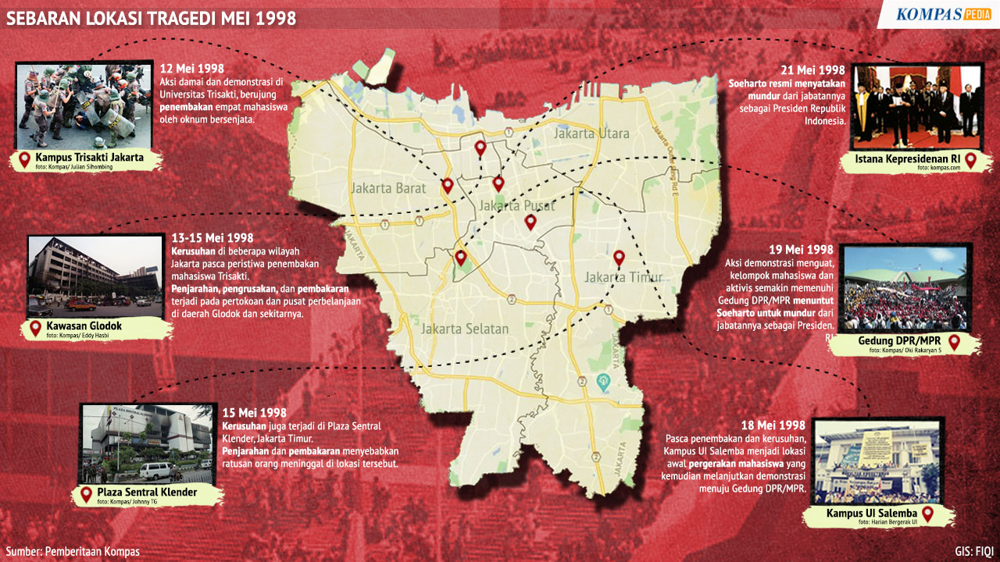

Pada 12 Mei 1998, mahasiswa Trisakti berunjuk rasa dari kampus menuju Bundaran HI. Tragedi penembakan terjadi di Jl. Kyai Tapa, menewaskan empat mahasiswa. Demonstrasi ini menjadi pemicu jatuhnya rezim Orde Baru.
- Lokasi Utama: Universitas Trisakti (Jl. Kyai Tapa, Grogol)
- Rute: Menuju Senayan dan Bundaran HI
- Tanggal Kunci: 12 Mei 1998
- Dampak: Mundurnya Presiden Soeharto pada 21 Mei 1998

Sumber: Arsip Sejarah Nasional. Unggah gambar Anda untuk tampil di sini.